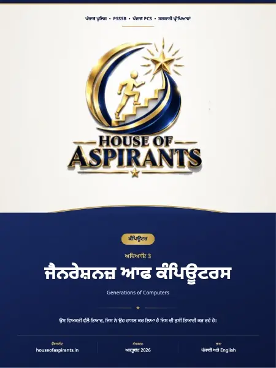

Finished reading? Check what you remember with a quick MCQ test.

Summary
ਕੰਪਿਊਟਰਾਂ ਦੀਆਂ ਪੀAੀਆਂ ਕੰਪਿਊਟਰ ਦੀ ਪੀAੀ ਕੰਪਿਊਟਰ ਤਕਨਾਲੋਜੀ ਦੇ ਵਿਕਾਸ ਦੇ ਇੱਕ ਪੜਾਅ ਨੂੰ ਦਰਸਾਉਂਦੀ ਹੈ। ਹਰ ਪੀੜ੍ਹੀ ਵਿੱਚ ਇਲੈਕਟ੍ਰਾਨਿਕ ਪੁਰਜ਼ਿਆਂ, ਗਤੀ, ਮੈਮੋਰੀ, ਸਟੋਰੇਜ, ਆਕਾਰ, ਭਰੋਸੇਯੋਗਤਾ ਅਤੇ ਪ੍ਰੋਗਰਾਮਿੰਗ ਸਮਰੱਥਾ ਵਿੱਚ ਮਹੱਤਵਪੂਰਨ ਸੁਧਾਰ ਹੋਏ। ਕੰਪਿਊਟਰਾਂ ਦੀਆਂ ਪੀੜ੍ਹੀਆਂ ਦਾ ਵਿਕਾਸ ਮੁੱਖ ਤੌਰ ’ਤੇ ਇਲੈਕਟ੍ਰਾਨਿਕ ਸਰਕਟਾਂ ਦੀ ਤਰੱਕੀ ’ਤੇ ਨਿਰਭਰ
Download
Download Chapter 3: ਜੈਨਰੇਸ਼ਨਜ਼ ਆਫ ਕੰਪਿਊਟਰਸ (Generations of (PDF) - 1.7 MB, 10 pages, hosted on this site. No sign-up, no email wall and no redirect through a third party.
About this file
- File name:
ਜੈਨਰੇਸ਼ਨਜ਼-ਆਫ-ਕੰਪਿਊਟਰਸ .pdf - Pages: 10
- Size: 1.7 MB
- Published: 10 October 2026
- Filed under: Study Material
Where this file sits
- Subject: Computer
- Language: Punjabi (ਪੰਜਾਬੀ)
- Chapter: Chapter 3: ਜੈਨਰੇਸ਼ਨਜ਼ ਆਫ ਕੰਪਿਊਟਰਸ (Generations of Computers)
This page was generated automatically from content/study-material/computer/punjabi/03 - ਜੈਨਰੇਸ਼ਨਜ਼ ਆਫ ਕੰਪਿਊਟਰਸ (Generations of Computers)/. Its subject, language and chapter come from the folders the file sits in, its part number from its place among the files beside it, and its title, slug and description from those. The page count and the summary were read out of the PDF itself - the file is the document.